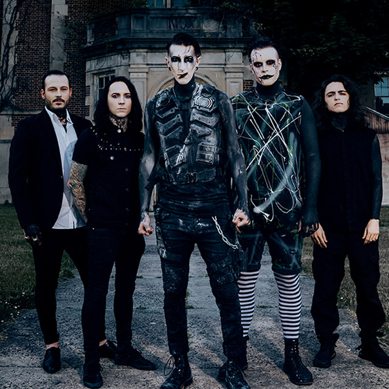

Motionless in White is an American heavy metal band from Scranton, Pennsylvania. Formed in 2005, the band consists of Chris "Motionless" Cerulli (lead vocals), Ryan Sitkowski (lead guitar), Rick "Horror" Olson (rythm guitar), Vinny Mauro (drums). and Justin Morrow (bass). The band has stated that their band name derived from the Eighteen Visions song "Motionless and White".
Motionless in White was signed to Fearless Records for their first three studio albums; their fourth album, Graveyard Shift, was released in May 2017 through Roadrunner Records. Their most recent fifth album, Disguise, was released in June 2019.